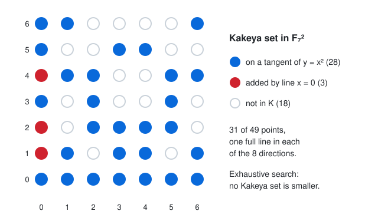

Kakeya Sets over Finite Fields: Dvir’s Polynomial Method
Kakeya Sets over Finite Fields: Dvir’s Polynomial Method
Thesis
A Kakeya set in \(\mathbb F_q^n\) is a set of points that contains a full line in every direction. You might hope to pack all those lines into a small region by making them overlap. Zeev Dvir proved in 2008 that you cannot: every Kakeya set has at least \(\binom{q+n-1}{n} \ge q^n/n!\) points, which is a fixed fraction of the whole space. The proof is half a page long. It uses no geometry at all, only one fact: a nonzero polynomial of low degree cannot vanish everywhere. This chapter states the problem and proves Dvir’s bound. It then checks everything by computer: - the exact smallest Kakeya sets in the plane, found by exhaustive search - a conic construction that attains that minimum - the linear-algebra statement at the heart of Dvir’s proof, on random Kakeya sets in \(\mathbb F_q^3\)
The real-number version of the problem, for \(\mathbb R^3\), was resolved only in a 2025 preprint by Hong Wang and Joshua Zahl.
Mental model

Lines and directions. In \(\mathbb F_q^n\), a line is \(\{b + tv : t \in \mathbb F_q\}\) for a base point \(b\) and a nonzero direction \(v\). Every line has exactly \(q\) points. Two directions are the same if one is a scalar multiple of the other, so there are \((q^n - 1)/(q - 1)\) directions. That is \(q+1\) in the plane: the slopes \(0, 1, \dots, q-1\) plus vertical. A Kakeya set needs one line per direction, so it is the union of \(q+1\) lines in the plane and \(q^2+q+1\) lines in 3-space.
Why there is a floor. In the plane, any two non-parallel lines meet in exactly one point. Take the \(q+1\) chosen lines in some order. The \(k\)-th line meets the \(k-1\) earlier ones in at most \(k-1\) points, so it contributes at least \(q-(k-1)\) new points. Summing gives \(|K| \ge q + (q-1) + \dots + 1 = q(q+1)/2\), about half the plane. That argument does not generalise: in 3-space most pairs of lines do not meet at all, and the counting runs out of steam.
Dvir’s argument. It works for any \(n\). Suppose \(|K| < \binom{q+n-1}{n}\), which is the number of monomials of degree at most \(q-1\) in \(n\) variables. Requiring a polynomial to vanish at each point of \(K\) is one linear equation on its coefficients. There are more unknowns than equations, so some nonzero polynomial \(P\) of degree \(d \le q-1\) vanishes on all of \(K\). Let \(P_d\) be its top-degree homogeneous part. It is nonzero, and \(d \ge 1\) because a nonzero constant cannot vanish on a nonempty set. Now take any direction \(v\), and let \(b\) be the base point of the line in direction \(v\) that lies inside \(K\). The one-variable polynomial \[ g(t) = P(b + tv) \] has degree at most \(d \le q-1\) but vanishes at all \(q\) values of \(t\). So it is the zero polynomial. In particular its \(t^d\) coefficient is zero, and that coefficient is exactly \(P_d(v)\). Because \(P_d\) is homogeneous, it then vanishes at every nonzero multiple of \(v\), and it vanishes at \(0\) too. So \(P_d\) vanishes on all of \(\mathbb F_q^n\). But a nonzero polynomial whose degree in each variable is less than \(q\) cannot vanish everywhere (induct on the number of variables, using the one-variable root count). That is a contradiction. Hence \[ |K| \;\ge\; \binom{q+n-1}{n} \;\ge\; \frac{q^n}{n!}. \]
The contradiction comes from a statement you can test by computer: no nonzero polynomial of degree \(\le q-1\) vanishes on a Kakeya set. Equivalently, the matrix that evaluates all such monomials at the points of \(K\) has full column rank.
The plane, exactly. For odd \(q\), Blokhuis and Mazzocca determined the true minimum: \(q(q+1)/2 + (q-1)/2\). They also showed which sets attain it: the \(q+1\) lines of a “dual oval”, meaning a set of lines no three of which pass through one point. For our purposes, these are the tangent lines to a conic. Concretely: - The tangent to \(y = x^2\) at \((a, a^2)\) is \(y = 2ax - a^2\). Because \(2\) is invertible when \(q\) is odd, these \(q\) tangents cover all \(q\) slopes. - The vertical line \(x = 0\) covers the last direction.
The figure shows the result for \(q = 7\).
Worked example
The script below does three things:
- It finds the exact smallest Kakeya set in \(\mathbb F_q^2\) for \(q = 3, 5, 7\). Each step chooses one of the \(q\) parallel lines in the next direction and removes duplicate partial unions. Translation symmetry lets it fix the first line.
- It builds the conic construction and checks it is Kakeya.
- It tests Dvir’s key statement: a rank computation mod \(q\) on random Kakeya sets in \(\mathbb F_q^3\), plus a control set of the same size that is not Kakeya.
kakeya.py
"""Finite-field Kakeya sets: exact minimum in F_q^2, the conic construction,
and Dvir's polynomial-method bound checked by linear algebra mod q (q prime)."""
import itertools, random
from math import comb
import numpy as np
def directions(q, n):
"""One representative per direction in F_q^n: first nonzero coordinate = 1."""
out = []
for v in itertools.product(range(q), repeat=n):
nz = [c for c in v if c]
if nz and next(c for c in v if c) == 1:
out.append(v)
return out
def line(q, base, d):
return {tuple((b + t * c) % q for b, c in zip(base, d)) for t in range(q)}
# ---- 1. exact minimum Kakeya set in F_q^2 by exhaustive search ----
def min_kakeya_plane(q):
dirs = directions(q, 2) # q+1 directions
# for each direction, the q parallel lines as bitmasks over q^2 points
masks = []
for d in dirs:
seen, ls = set(), []
for x, y in itertools.product(range(q), repeat=2):
L = frozenset(line(q, (x, y), d))
if L not in seen:
seen.add(L)
ls.append(sum(1 << (a * q + b) for a, b in L))
masks.append(ls)
# WLOG fix the first direction's line (translations are symmetries)
best = q * q
acc = np.array([masks[0][0]], dtype=object)
for ls in masks[1:]:
acc = np.array([a | m for a in acc for m in ls], dtype=object)
acc = np.unique(acc) # dedupe partial unions
sizes = [bin(int(a)).count("1") for a in acc]
return min(sizes), len(acc)
# ---- 2. conic construction: tangent lines to y = x^2 plus one vertical line ----
def conic_kakeya(q):
inv2 = pow(2, -1, q)
K = set()
for a in range(q): # tangent at (a, a^2): y = 2a x - a^2
K |= line(q, (0, (-a * a) % q), (1, (2 * a) % q))
K |= line(q, (0, 0), (0, 1)) # vertical direction
return K
def is_kakeya(K, q, n):
pts = set(K)
for d in directions(q, n):
if not any(line(q, b, d) <= pts for b in pts):
return False
return True
# ---- 3. Dvir: no nonzero poly of degree <= q-1 vanishes on a Kakeya set ----
def rank_mod_p(M, p):
M = M.copy() % p
r = 0
rows, cols = M.shape
for c in range(cols):
piv = next((i for i in range(r, rows) if M[i, c]), None)
if piv is None:
continue
M[[r, piv]] = M[[piv, r]]
M[r] = (M[r] * pow(int(M[r, c]), -1, p)) % p
for i in range(rows):
if i != r and M[i, c]:
M[i] = (M[i] - M[i, c] * M[r]) % p
r += 1
if r == rows:
break
return r
def monomials(n, deg):
return [e for e in itertools.product(range(deg + 1), repeat=n) if sum(e) <= deg]
def eval_matrix(K, mons, p):
pts = np.array(sorted(K), dtype=np.int64)
cols = [np.prod([pow_vec(pts[:, i], e[i], p) for i in range(len(e))], axis=0) % p
for e in mons]
return np.stack(cols, axis=1)
def pow_vec(v, k, p):
out = np.ones_like(v)
for _ in range(k):
out = (out * v) % p
return out
def random_kakeya(q, n, rng):
K = set()
for d in directions(q, n):
base = tuple(rng.randrange(q) for _ in range(n))
K |= line(q, base, d)
return K
if __name__ == "__main__":
print("== F_q^2: exhaustive minimum vs conic construction vs bounds ==")
print(f"{'q':>2} {'exact min':>9} {'conic':>5} {'BM q(q+1)/2+(q-1)/2':>20} {'Dvir C(q+1,2)':>13} {'unions searched':>15}")
for q in (3, 5, 7):
m, nunions = min_kakeya_plane(q)
K = conic_kakeya(q)
assert is_kakeya(K, q, 2)
print(f"{q:>2} {m:>9} {len(K):>5} {q*(q+1)//2 + (q-1)//2:>20} {comb(q+1, 2):>13} {nunions:>15}")
print("\n== F_q^3: random Kakeya sets (one random line per direction) ==")
rng = random.Random(2026)
print(f"{'q':>2} {'|K|':>4} {'q^3':>4} {'Dvir C(q+2,3)':>13} {'#monomials deg<=q-1':>19} {'rank of eval':>12} {'vanishing polys':>15}")
for q in (3, 5, 7):
K = random_kakeya(q, 3, rng)
assert is_kakeya(K, q, 3)
mons = monomials(3, q - 1)
r = rank_mod_p(eval_matrix(K, mons, q), q)
print(f"{q:>2} {len(K):>4} {q**3:>4} {comb(q+2, 3):>13} {len(mons):>19} {r:>12} {len(mons)-r:>15}")
print("\n== the bound is about degree q-1: a non-Kakeya set of the same size ==")
q = 5
K = random_kakeya(q, 3, random.Random(7))
mons = monomials(3, q - 1)
# same size, but every point on a few planes z in {0,1,..}: not Kakeya
flat = sorted(itertools.product(range(q), repeat=3), key=lambda v: (v[2], v[0], v[1]))[:len(K)]
r = rank_mod_p(eval_matrix(set(flat), mons, q), q)
print(f"|K|={len(K)} random Kakeya set; |S|={len(flat)} points filling planes z=0..{flat[-1][2]}: Kakeya? {is_kakeya(flat, q, 3)}; "
f"vanishing polys of degree<=4: {len(mons)-r}")Output (Python 3, numpy 2.5.4, under a second of CPU):
== F_q^2: exhaustive minimum vs conic construction vs bounds ==
q exact min conic BM q(q+1)/2+(q-1)/2 Dvir C(q+1,2) unions searched
3 7 7 7 6 16
5 17 17 17 15 2946
7 31 31 31 28 820499
== F_q^3: random Kakeya sets (one random line per direction) ==
q |K| q^3 Dvir C(q+2,3) #monomials deg<=q-1 rank of eval vanishing polys
3 22 27 10 10 10 0
5 92 125 35 35 35 0
7 225 343 84 84 84 0
== the bound is about degree q-1: a non-Kakeya set of the same size ==
|K|=93 random Kakeya set; |S|=93 points filling planes z=0..3: Kakeya? False; vanishing polys of degree<=4: 1Reading it
- The plane is solved, and the search agrees. For \(q = 3, 5, 7\), exhaustive search finds minima of \(7, 17, 31\). These match the Blokhuis–Mazzocca value \(q(q+1)/2 + (q-1)/2\) exactly, and the conic construction attains it. For \(q = 7\), the last column means about 820 thousand distinct unions of 8 lines were compared, and none had fewer than 31 points. Dvir’s general bound, \(\binom{q+1}{2} = 6, 15, 28\), sits just below. In the plane it is the same as the elementary counting bound \(q(q+1)/2\), short by only \((q-1)/2\).
- The key statement holds in 3-space. For each random Kakeya set, the evaluation matrix has rank equal to the number of monomials of degree \(\le q-1\) (\(10, 35, 84\)), so the space of vanishing polynomials is \(\{0\}\). That is the exact claim the proof needs, and it is why \(|K| \ge 10, 35, 84\).
- The bound is loose in 3-space. Random Kakeya sets have 22, 92 and 225 points, against Dvir’s floor of 10, 35 and 84. The true minimum for \(n \ge 3\) is still not known exactly. Dvir’s bound is about \(q^3/6\). Dvir, Kopparty, Saraf and Sudan raised it to \(q^n/2^n\) with the “method of multiplicities”, and they note that this is tight to within a factor of about 2 as \(q \to \infty\). Random sets have about \(0.66\,q^3\) points, close to the \((1-1/e)q^3\) you would expect if \(q^3\) points were thrown at random.
- It is the lines, not the size. The control set has 93 points, the same as a Kakeya set, but it fills the planes \(z = 0, \dots, 3\). The polynomial \(z(z-1)(z-2)(z-3)\), of degree \(4 = q-1\), vanishes on it, and the rank computation finds exactly that one. The “full line in every direction” property is what rules such polynomials out: on a Kakeya set, the vanishing would be forced at every direction.
Pitfalls
- “Direction” means a line through the origin, not a vector. Counting \(q^n - 1\) directions instead of \((q^n-1)/(q-1)\) makes Kakeya sets look harder to build than they are. It also breaks the homogeneity step, which relies on \(P_d(\lambda v) = \lambda^d P_d(v)\).
- Degree \(\le q-1\) is essential. At degree \(q\) the argument fails: \(x^q - x\) vanishes on all of \(\mathbb F_q\). This is why the bound is \(\binom{q+n-1}{n}\) and not something larger.
- Prime vs prime-power fields. The lab does arithmetic mod \(q\), so it needs \(q\) prime. Dvir’s theorem holds for every finite field, but checking \(q = 4, 8, 9\) needs real \(\mathbb F_{p^k}\) arithmetic, not integers mod \(q\).
- Even \(q\) is different. Over \(\mathbb F_{2^k}\), the tangent lines of a conic all pass through one point, its nucleus, so the construction above breaks. But even-\(q\) planes contain hyperovals, and these give Kakeya sets that meet the elementary bound \(q(q+1)/2\) exactly. The \((q-1)/2\) surplus is an odd-\(q\) phenomenon (Blokhuis–Mazzocca).
- The finite and real problems are related but not the same. Dvir’s proof does not transfer to \(\mathbb R^n\), where a Besicovitch set contains a unit segment in every direction and can have measure zero. There the question is about Hausdorff dimension. Wang and Zahl’s 2025 proof for \(\mathbb R^3\) is a 127-page multiscale argument about unions of tubes.
Try this
- Add \(q = 11\) to the plane search. Does it finish? Estimate the number of partial unions before running it, and compare with \(q(q+1)/2 + (q-1)/2 = 71\).
- Replace
random_kakeyawith a greedy construction: for each direction, choose the line that adds the fewest new points. How close to \(\binom{q+2}{3}\) does it get for \(q = 5, 7\)? - Extend the rank check to a set that is almost Kakeya: delete one point from a random Kakeya set until a vanishing polynomial of degree \(\le q-1\) appears. How many deletions does it take?
- Prove the planar bound \(|K| \ge q(q+1)/2\) by the polynomial method instead of by counting intersections. Which monomials do you need?
Sources
- Zeev Dvir, “On the size of Kakeya sets in finite fields”, J. Amer. Math. Soc. 22 (2009), 1093–1097: https://doi.org/10.1090/S0894-0347-08-00607-3 (preprint https://arxiv.org/abs/0803.2336)
- Aart Blokhuis and Francesco Mazzocca, “The finite field Kakeya problem”, in Building Bridges Between Mathematics and Computer Science, Bolyai Society Mathematical Studies 19 (2008), 205–218: https://arxiv.org/abs/0911.4370
- Hong Wang and Joshua Zahl, “Volume estimates for unions of convex sets, and the Kakeya set conjecture in three dimensions” (2025): https://arxiv.org/abs/2502.17655
- Zeev Dvir, Swastik Kopparty, Shubhangi Saraf and Madhu Sudan, “Extensions to the method of multiplicities, with applications to Kakeya sets and mergers” (2009): https://arxiv.org/abs/0901.2529
- Terence Tao, “Dvir’s proof of the finite field Kakeya conjecture” (2008): https://terrytao.wordpress.com/2008/03/24/dvirs-proof-of-the-finite-field-kakeya-conjecture/
- Breakthrough Prize, 2026 laureates (Hong Wang, New Horizons in Mathematics): https://breakthroughprize.org/News/98